Скриншоты выполнения 2 задания по дисциплине "WEB-backend"
- Для выполнения второго задания нам необходимо зайти в программу FileZilla
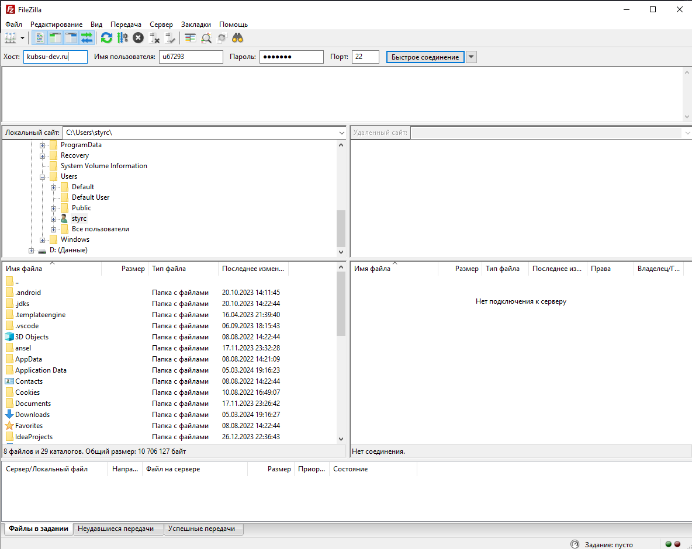
- Здесь мы переносим с локального компьютера заранее скачанную папку Files и помещаем её в каталог /www
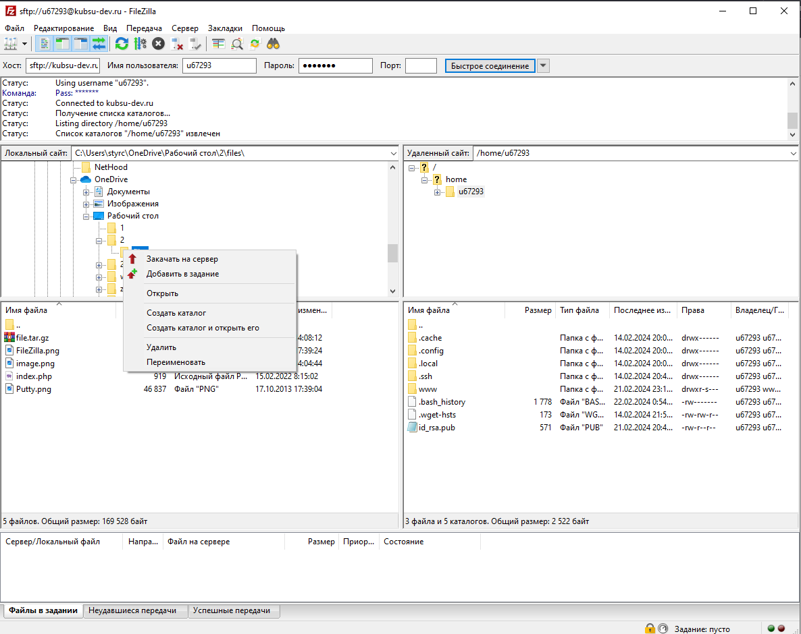
- Все перенеслось успешно
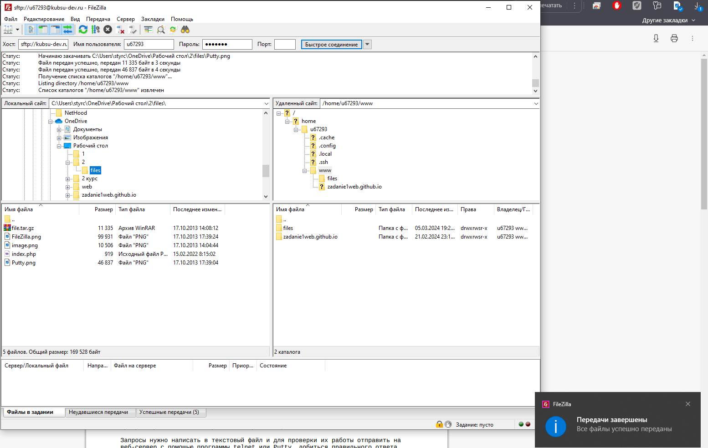
- Далее проверяем загрузку файлов в браузере из учебного домена http://u67293.kubsu-dev.ru/.
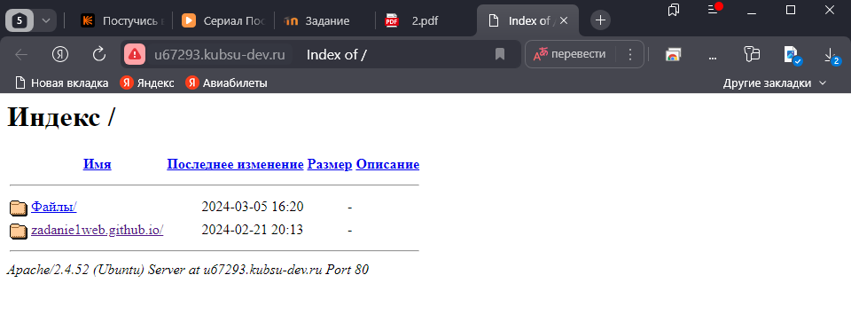
- Затем проверяем работоспособность index.php
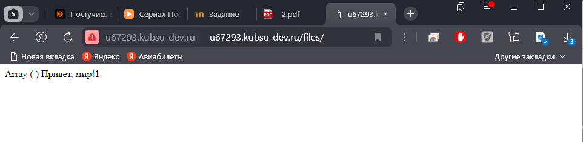
- Далее с помощью программы Putty выполнить задания отправкой HTTP-запросов к
веб-серверу:
Для первого и второго пункта наше подключение на сервер будет происходить через 80 порт,тип подключения Other и выбираем Raw, также выбираем не закрывать окно

- 1) Получить главную страницу методом GET в протоколе HTTP 1.0;


- 2) Получить внутреннюю страницу методом GET в протоколе HTTP 1.1;
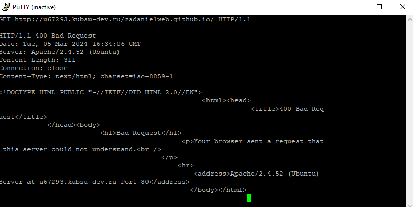
- 3) Определить размер файла file.tar.gz, не скачивая его;
При помощи команды curl -I http://u67293.kubsu-dev.ru/files/file.tar.gz определяем размер файла.
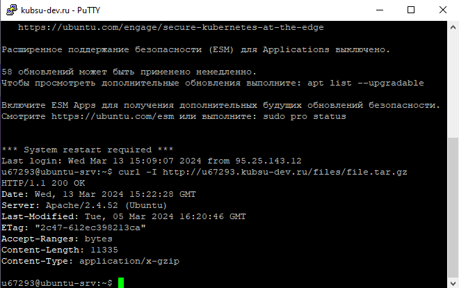
- 4) Определить медиатип ресурса curl -I http://u67293.kubsu-dev.ru/files//image.png;
Для этого нам необходимо воспользоваться командой file --mime-type image.png
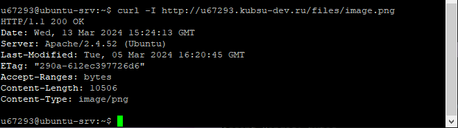
- 5) Отправить комментарий на сервер по адресу /index.php;
Для этого нам необходимо воспользоваться командой curl -X POST -d "comment=Hello, World! " http://u67293.kubsu-dev.ru/files/index.php
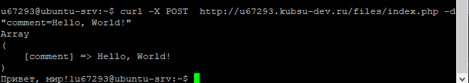
- 6) Получить первые 100 байт файла /file.tar.gz;
Для этого нам необходимо воспользоваться командой curl -s -H "Range: bytes=0-99" -I http://u67293.kubsu-dev.ru/files/file.tar.gz
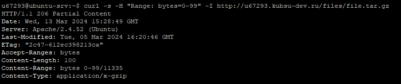
- 7) Определить кодировку ресурса /index.php.
Для этого нам необходимо воспользоваться командой curl -I http://u67293.kubsu-dev.ru/files/index.php
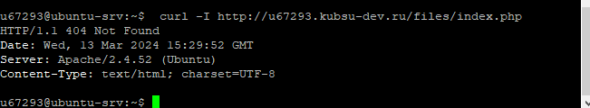